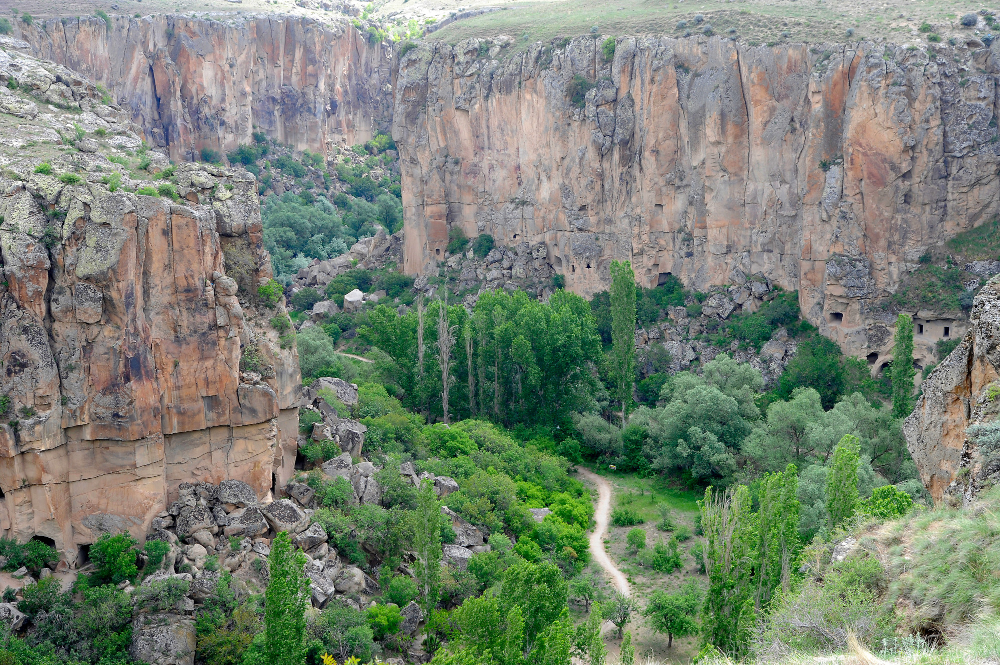
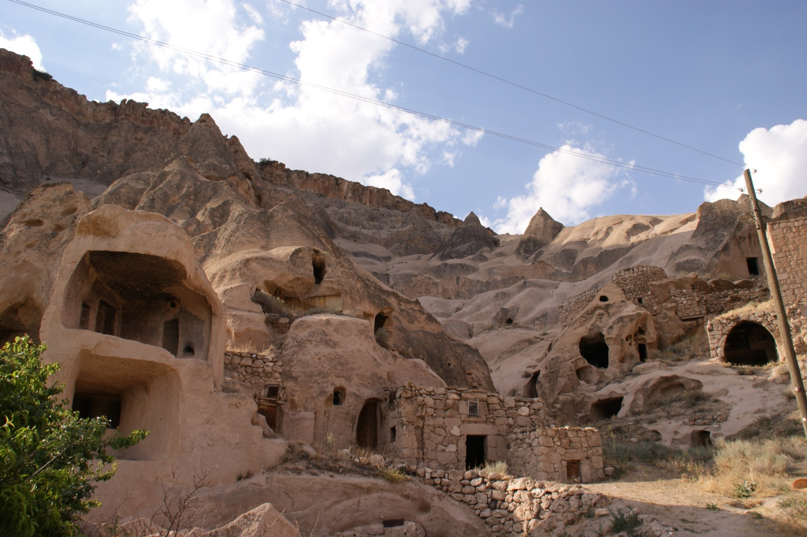
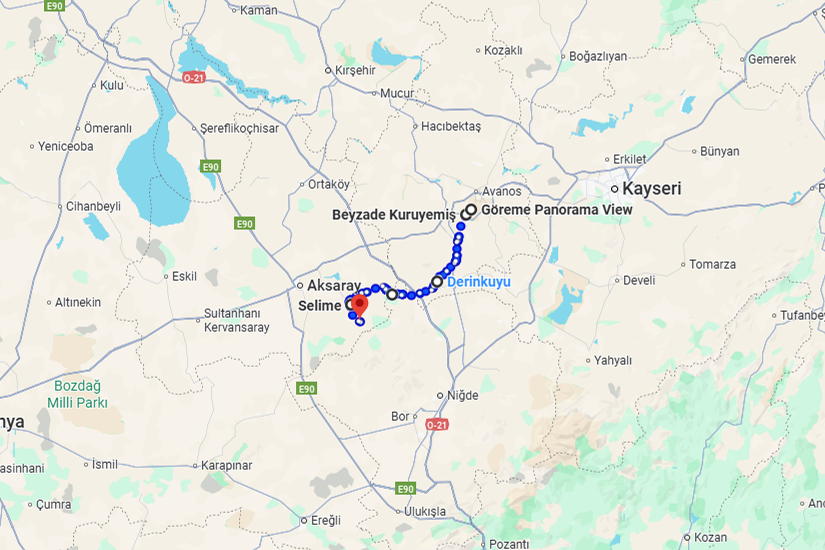

Tour "Grün"
Begib dich auf eine geführte Tour durch Kappadokien, bei der du historische Sehenswürdigkeiten und die Schönheit der Natur entdeckst. Erlebe die berühmten unterirdischen Städte, das grüne Ihlara-Tal und das Selime-Kloster.
- Start: Abholung in Unterkunft
- Startzeit: 8:00 Uhr
- Dauer: 8-9 Stunden
- Guide: Englisch, Deutsch, Türkisch, Spanisch, Französisch
- Preis: 80€ Erwachsene, Kinder unter 12 Jahren 50€
Route:
- Abholung in der Unterkunft
- Goreme Panorama
- Beyzade Kuruyemiş
- Derinkuyu
- Narlı Göl-Kratersee
- Kloster Selime
- Ihlara-Tal
- Rücktransfer
Inbegriffen:
- Abholung vom Hotel und Rücktransfer zum Hotel in der Region Kappadokien
- Eintrittskarten
- Mittagessen
- Kleine Flasche Wasser
- Klimatisiertes Fahrzeug
Wichtige Informationen:
- Du musst 3 km durch die Ihlara-Schlucht laufen. Wenn du eine Phobie vor geschlossenen Räumen hast, raten wir dir davon ab, die unterirdische Stadt zu betreten.
- Kinder unter 18 Jahren dürfen nur mit einer volljährigen Aufsichtsperson teilnehmen.
Verfügbarkeit prüfen


